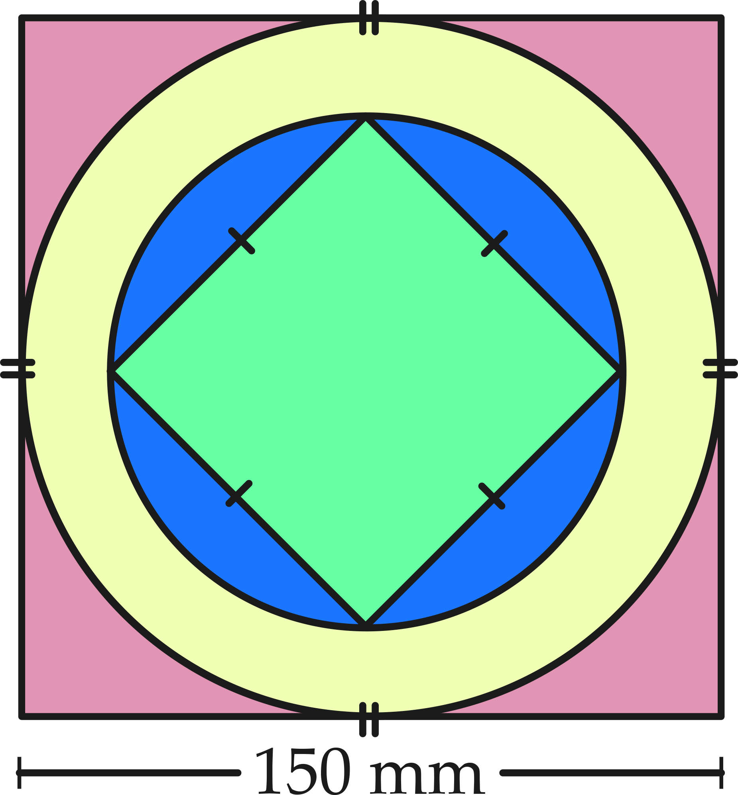

Caelan is drawing a design for a quilting square. The quilting square will consist of two squares and two concentric circles.
A larger square with side length \(150\) mm forms the boundary of the design.
Two concentric circles are drawn so that the larger of the two circles is tangent to the four sides of the larger square.
A smaller square is drawn so that the midpoint of the diagonals of the square passes through the centre of the circles and the four vertices of the square lie on the circumference of the smaller circle.

Caelan wants the area of the smaller square to be equal to the area of the region between the two circles. Determine the dimensions of the smaller square required to make the two areas equal.
Solution
Let \(x\) represent the side length of the smaller square.
Let \(D\) represent the diameter of the larger circle, \(R\) represent the radius of the larger circle and \(A_L\) represent the area of the larger circle.
Let \(d\) represent the diameter of the smaller circle, \(r\) represent the radius of the smaller circle and \(A_S\) represent the area of the smaller circle.
The diameter of the larger circle is equal to the side length of the quilting square. Therefore, \(D=150\text{ mm}\) and \(R=75\text{ mm}\). The area of the large circle is \(A_L=\pi (75)^2=5625\pi\text{ mm}^2\).
The length of the diagonal of the smaller square is equal to the diameter of the smaller circle. Using the Pythagorean Theorem, \(d^2=x^2+x^2=2x^2\). It follows that \(d=x\sqrt{2}\) m and \(r=\left(\frac{x\sqrt{2}}{2}\right)\) mm.
The area of the smaller circle is \(A_S=\pi\left(\frac{x\sqrt{2}}{2}\right)^2=\frac{\pi x^2}{2}\mbox{ mm}^2\).
The area of the region between the two circles is \(A_L-A_S=\left(5625\pi - \frac{\pi x^2}{2}\right)\text{ mm}^2\). The area of the smaller square is \(x^2\text{ mm}^2\) and Caelan wants this equal to \(A_L-A_S\).
\[\begin{aligned} x^2=&5625\pi - \frac{\pi x^2}{2}\\ 2x^2=&11\,250\pi - \pi x^2\\ 2x^2+\pi x^2=&11\,250\pi\\ (2+\pi)x^2=&11\,250\pi\\ x^2=&\frac{11\,250\pi}{2+\pi}\\ x=&\sqrt{\frac{11\,250\pi}{2+\pi}}, \quad x>0\text{ since side length is positive}\\ x&\approx&82.9\text{ mm}\\\end{aligned}\]
To accomplish Caelan’s goal, the smaller square should have side length of approximately \(83\text{ mm}\).